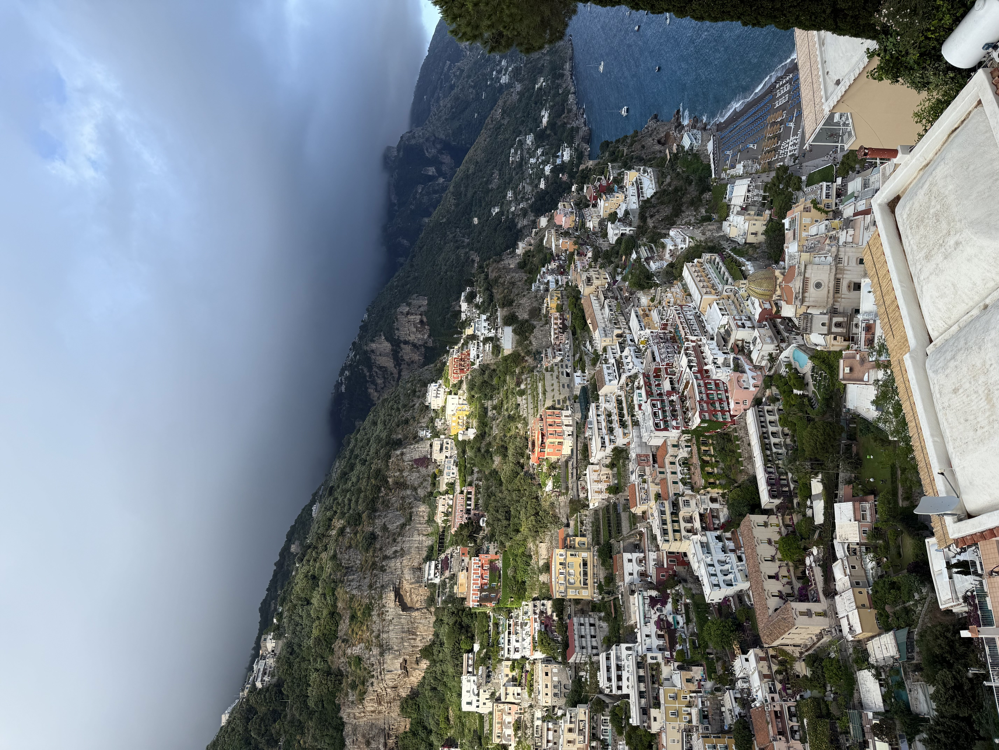

About
Hi! My name is Elton Neman. I am from Los Angeles, California, and I love to travel. I have been to 18 countries all around the world and across three different continents. Most recently, I visited Italy and Greece this summer. It was my first time in Greece, and I absolutely loved it. I went to Mykonos and Athens, two very different but equally beautiful places. Mykonos had such a fun and relaxing atmosphere, with stunning beaches and great food, so I would definitely go back. Athens, on the other hand, was full of incredible history and culture. I felt like I really explored most of it, so I don’t feel the need to return anytime soon. In Italy, I visited Capri, Positano, Sorrento, and Taormina. Even though I’ve been to Italy several times before, these places were completely new to me, and each had its own charm. I love to travel because it allows me to experience different cultures, meet new people, and see the world from new perspectives. I currently speak three languages (English, French, and Farsi) so being able to use them in their native countries makes every trip even more meaningful and exciting for me.